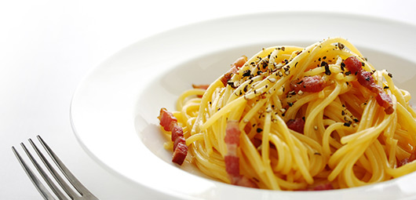
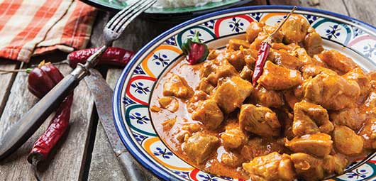
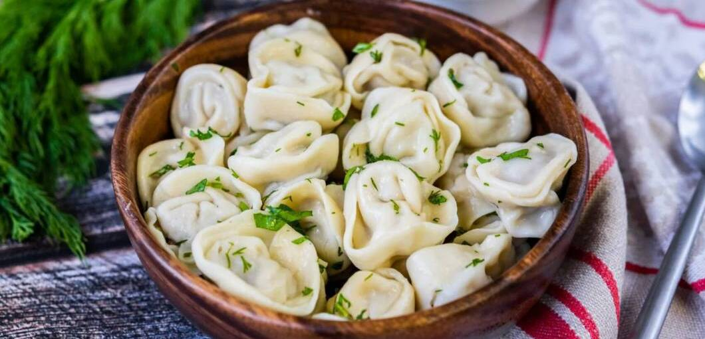

Recipes
On this page I will introduce you some recipes of tasty dishes that everyone can easily cook at home.
We will start from the easiest ones and end with more difficult ones, but DO NOT WORRY! The complexity of a dish is determined by the cooking time of that dish.
Spaghetti Carbonara
Recipe Info
- Servings: 4
- Prep Time: 10 mins
- Cook Time: 20 mins
Ingredients
- 450g dried spaghetti
- 300g sliced pancetta or streaky bacon
- 4 large eggs
- 10 tbsp Parmesan Cheese, finely grated, plus extra to serve
- 100ml cream
- A splash of olive oil
- Freshly ground black pepper
Instructions
- Firstly cook the pasta for 8-10 minutes in boiling salted water to which a splash of olive oil has been added.
- Meanwhile, heat a frying pan and fry the pancetta (or bacon) without any extra oil until it’s crisp and golden, about 5 minutes.
- Next, whisk the eggs, yolks and cream in a bowl and season generously with black pepper then whisk in the cheese.
- When the pasta is cooked, drain it quickly in a colander, leaving a little of the moisture still clinging.
- Now quickly return it to the saucepan and add the pancetta and any oil in the pan, along with the egg and cream mixture.
- Stir very thoroughly, so that everything gets a good coating – what happens is that the liquid egg cooks briefly as it comes into contact with the hot pasta.
- Serve the pasta in really hot bowls with some extra grated cheese.
Best Soundtrack for Cooking Pasta
In my opinion, the best song to cook this dish is: “Felicità” by Al Bano and Romina Power
Check out an accurate video tutorial below if you faced some difficulties while cooking
Chicken Curry
Recipe Info
- Servings: 6
- Prep Time: 20 mins
- Cook Time: 20 mins
Ingredients
- 1kg chicken breasts, cut into chunks
- 2 tsps red chilli, finely chopped
- 1 tsp cumin
- 1 tsp yoghurt
- 1 tsp fresh ginger, finely chopped
- 200g ghee
- 500g onion, chopped
- 3 tsps coriander
- 1 tsp garam masala
- 1 tsp turmeric
- 1 tsp garlic, finely chopped
Instructions
- Heat the ghee in a pan over moderate flame. Add cumin and garam masala. Add onions and cook till golden.
- Add the chicken, ginger, garlic, salt and yoghurt. Mix well and cover. When chicken is half done, add all other spices and cook for few minutes on medium flame. Keep stirring till the chicken is properly cooked. Cook further till the oil starts separating from the mixture. Add one cup of water and allow simmering for 5-7 minutes.
- Remove from heat and serve with rice.
Pelmeni (Dumplings)
Recipe Info
- Servings: 12
- Prep Time: 1-2 hrs
- Cook Time: 20 mins
Ingredients
Dough:
- 1 large egg
- 1 tsp vegetable oil
- 1 tsp salt
- ¾ cup warm water, or more as needed
- 3 cups all-purpose flour
- 1 tsp all-purpose flour for dusting
Filling:
- 18 ounces ground beef (pork, chicken)
- 1 small onion, chopped
- 1 ½ tsp ice-cold water
- 1 tsp coarse salt
- freshly ground pepper to taste
Instructions
- Make dough: combine egg, oil, and salt in a liquid measuring cup; add enough warm water to fill 1 cup. Pour into a large bowl and kneed in 3 cups flour until smooth and elastic. Cover with a dish towel and let dough rest for 30 minutes.
- Meanwhile, make filling: combine ground beef (pork, chicken), onion, water, salt, and pepper in a medium bowl; mix thoroughly by hand or using a fork. Set aside.
- Dust a baking sheet lightly with 1 tsp flour; set aside.
- Roll out a portion of dough very thinly on a lightly floured surface; keep remaining dough covered with a dish towel to avoid drying out. Cut out 2 ½-inch rounds with a cookie cutter. Place about 1 tsp filling on one side of each dough circle. Fold dough over and seal the edges using your fingers, forming a crescent. Join the ends and pinch them together.
- Place on the prepared baking sheet. Repeat with remaining dough and filling. Freeze pelmeni for 30 mins to prevent them from sticking together.
- Bring a large pot of lightly salted water to a simmer. Working in batches, cook frozen pelmeni in simmering water until meat is cooked through and pelmeni float to the top, about 5-7 mins. Continue cooking for 5 more mins. Transfer to serving plates using a slotted spoon.
How to Fold Pelmeni
Khachapuri Adjaruli
Recipe Info
- Servings: 6
- Prep Time: 45 mins (+ 4 hrs for handmade dough)
- Cook Time: 20 mins
Ingredients
Dough:
- 1¾ cups all-purpose or bread flour
- ¾ tsp granulated sugar
- ¾ tsp active dry yeast
- ¾ tsp kosher salt
- 1 tsp olive oil
Filling:
- 1 cup shredded whole milk, low-moisture mozzarella (not fresh mozzarella)
- ⅓ cup goat cheese, finely crumbled
- ⅓ cup drained, finely crumbled brined feta (not low-fat or light)
- 1 tsp unsalted butter, melted, plus 2 tsp cold butter for serving (optional)
- 1 egg yolk from 1 large egg (optional)
Instructions
- Make the dough (but if you're using store-bought, proceed to Step 2): In a small saucepan over low, heat ½ cup plus 2 tablespoons/150 milliliters water until hot but not simmering. Turn off heat. In a large bowl, with your hands or a wooden spoon, stir together flour, sugar, yeast and salt. Check the temperature of reserved, warmed water; it should be warm to the touch, between 105 and 110 degrees. Add it to the flour mixture and, with your hands, knead mixture into smooth dough, about 5 minutes.
- Pour olive oil into a medium bowl. Holding dough with one hand, use it to coat the inside of the bowl with the oil. Set the dough in the bowl, oiled portion facing up. Cover bowl with a damp cloth or plastic wrap and let rise in a warm place until it doubled in volume, about 2 hours.
- Heat oven to 450 degrees (or 425, if using a convection oven). Line a half sheet tray with parchment paper; set aside. On a lightly floured surface, stretch and roll dough into a circle, ¼-inch thick, 10 to 12 inches across. Brush off excess flour, then lay the dough on the sheet tray. Using your fingers, roll, press and pinch two opposite sides of the circle a few inches into the center, building sides up, then press and pinch the narrow ends together to form two points. Continue to pinch and press the sides to create a raised rim and form the dough into an oval boat with an eye-like shape. Let rest in a warm place while you prepare the filling.
- In a medium bowl,combine mozzarella, goat cheese and feta with 3 tablespoons water. Stir with a fork until the mixture is thoroughly blended. Scrape the cheese mixture into the center of the dough boat, spreading it into an even layer.
- Bake khachapuri until the crust begins to brown and the cheese is melted, about 15 minutes. Remove pan from oven, leaving oven on. Brush sides of khachapuri generously with melted butter. Return khachapuri to the oven for an additional 5 minutes until the crust is extra crisp and the cheese just starts to brown around the edges.
- Using a spoon, make a shallow, 2-inch-wide well in the center of the cheese. Add the egg yolk and cold butter (if using), and serve immediately. To serve, hold down one pointed end of the hot khachapuri with a fork; using another fork, quickly stir the egg and butter (if using) into the cheese mixture until it’s smooth and stretchy. Rip pieces of the bread boat off to dip in the cheese while it’s still hot.